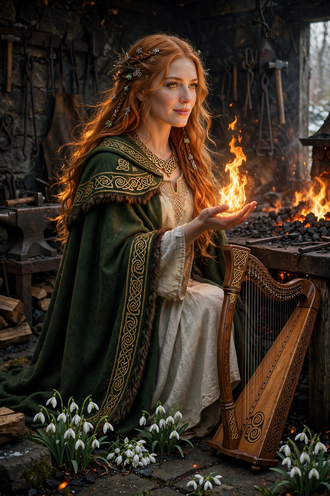

From Wikipedia, the free encyclopedia
| Brigid | |
|---|---|
| Affiliation | Irish mythology; goddess of poetry, healing, smithcraft and fire |
| Father | The Dagda |
| Festival | Imbolc (1 February) |
| Sacred site | Kildare — perpetual flame (historical) |
| Christian continuation | Saint Brigid of Kildare |

Brigid (Irish: Brigit, from a root meaning "the exalted one") is a goddess of Irish mythology, daughter of the Dagda, patroness of poetry, healing, smithcraft, fire and childbirth — a triple-aspected figure whom the medieval glossaries call a goddess whom poets adored. Her festival, Imbolc (1 February), marks the first stirrings of spring; at Kildare ("church of the oak") her sacred flame was tended for centuries, and in her Christian continuation as Saint Brigid of Kildare — abbess, wonder-worker, and one of Ireland's three patron saints — she is among the most beloved holy figures of the Celtic world.
The early Irish texts give Brigid a family and a sorrow: her son Ruadán was killed fighting the Fomorians, and her keening over him is said to be the first lament heard in Ireland. Cormac's Glossary (c. 900) describes her as having two sisters of the same name, governing poetry, healing and smithcraft respectively — the triple goddess pattern. She owns the ox Fea and the king of boars, invents (in one tale) the whistle for calling at night, and is linked with wells, fire and the first light of spring. Cú Chulainn's world and the mythological cycles keep her at their edges, a presence more honoured than narrated.
The historical Brigid of Kildare (c. 451–525, traditionally) founded a great double monastery; her Lives credit her with miracles of generosity — the cloak that spread to cover the land her monastery needed, beer and butter that never ran out for guests, the cloak hung to dry on a sunbeam. At Kildare a perpetual fire, tended by nuns (and, the medieval writers say, once by priestesses of the goddess), burned until the Reformation era; it was relit in 1993 by the Brigidine sisters and burns still. St Brigid's crosses, woven of rushes each Imbolc/St Brigid's Day (now a public holiday in Ireland since 2023), hang in Irish homes worldwide for protection.
Celtic mythology · Druidry · The Morrigan · Mythology · New religious movement